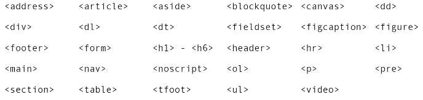
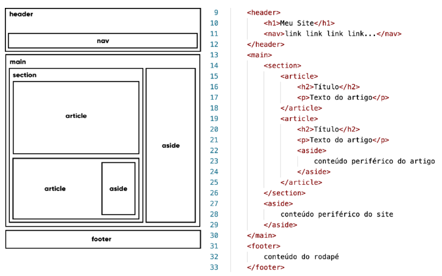
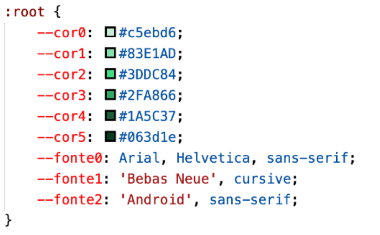
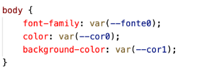

Vamos começar pela técnica mais básica para aplicar estilos em áreas pontuais em nosso site, que é usando as CSS dentro de parâmetros de HTML5.
OBSERVAÇÃO: As configurações pontuais (HTML style dentro da tag) vão prevalecer sobre as configurações gerais (CSS style).
CSS internal style
Para aplicar estilos de forma mais dinâmica e prática, podemos adicionar uma tag <style> dentro da área <head> do nosso documento HTML local.
OBSERVAÇÃO: As configurações pontuais (HTML style dentro da tag) vão prevalecer sobre as configurações gerais (CSS style).
CSS external style
Manter as folhas de estilo fora do código HTML, além de uma maior organização faz com que tudo seja reaproveitado de maneira mais eficiente nas outras páginas do nosso site. Para isso, utilizamos a tag <link> especialmente configurada para trabalhar com arquivos externos de estilo. Essa tag deve ser colocada dentro da área <head> do seu documento HTML.
Qual técnica eu escolho para usar?
Nesse cápitulo, aprendemos as três técnicas de uso de folhas de estilo em cascata: inline, interna e externa. Mas em que situações devemos escolher cada um dos formatos?
A técnica CSS inline style deve ser evitada ao máximo. Ela acaba deixando seu código meio confuso, misturando a parte HTML e CSS em uma mesma linha. Use apenas em configurações pontuais.
A técnica CSS internal style organiza melhor seu código, separando contúdo e estilo em duas áreas bem definidas do seu documento. Use essa técnica quando for criar páginas isoladas com estilos próprios, que não serão replicados em outras páginas. Opte també por essa técnica apenas se a quantidade de configurações de estilo for pequena/média.
Por fim, opte sempre pela técnica CSS external style sempre que seu estilo for usado em várias páginas dentro do seu site. Usando a tag <link> em várias páginas, você pode compartilhar o mesmo estilo entre elas e não vai precisar ficar alterando vários arquivos quando o seu cliente solicitar uma pequena mudança no tom de uma determinada cor.
De forma resumida, guarde isso na sua cabeça:
CSS externo = use sempre que puder
CSS interno = use para pequenas configurações
CSS inline = procure evitar
OBSERVAÇÃO: Ainda é possível utilizar as três técnicas em seu projeto.
Clique aqui para ter acesso ao matérial em pdf contendo as informações das CSS Inline, internal, external.
Personalizando Seletores
Vamos aprender a usar seletores de <id>(#) e class (.) de maneira eficiente.
Um id vai identificar um elemento único dentro da página atual. Essa identificação vai nos permitir criar um estilo especial para um elemento isolado. Já uma class vai identiricar uma classe à qual um ou mais elementos pertençam, compartilhando características em comum a todos os que façãm parte desse grupo
SE LIGA NA REGRA: Em um mesmo documento HTML, só podemos usar um id para um único elemento, o que significa que não podemos ter dois elementos com um mesmo id dentro de uma mesma página. Porém, podemos atribuir um mesmo class para vários elementos que possuam essa mesma característica.
MAIS UMA REGRA: Todo id em HTML é identificado nas CSS por um símbolo #. Toda class em HTML é identificada nas CSS por um ponto.
Pseudo-classes e Pseudo-elementos
Uma pseudo-classe CSS é uma palavra-chave adicionada às declarações de um seletor após um sinal de dois pontos e especificam um estado especial de um elemento.
Existem vários pseudo-classes para estilos, podemos citar: :hove, :visited, :active, :checked, :empty e :focus.
Já um pseudo-elemento CSS é uma palavra-chave adicionada às declarações de um seletor após dois sinais d edois pontos e permitem que você formate um pedaço específico do elemento referenciado.
Os principais pseudo-elementos usados nas CSS são: ::before, ::after, ::frist-latter, ::frist-line.
Vamos criar um exemplo bem simples e bastante usado para exemplificar o uso de pseudo-classes e pseudo-elementos:
O que é uma Caixa?
De forma simples e objetiva, badeado em um cnceito chamado "box model", a grande maioria dos elementos HTML que temos no nosso site são como caixas. Elas são containers que armazenam conteúdos ou até mesmo outras caixas.
Vamos analisar como uma caixa vai ser apresentada por todos os navegadores. Olhe atentamente o diagrama a seguir, que é extamente o já citado modelo de caixa:
Todo conteúdo possui uma largura (width) e uma altura (height) e a esse conjunto de propriedades, damos o nome de box-size (tamanho da caixa). O tamanho da caixa não inclui as medidas de padding, border, outline e margin.
OBSERVAÇÂO: Novidade das CSS3, exite a nova propriedade box-sizing onde podemos definir que as dimensões height e width não são medidas apenas a partir do conteúdo (content-box) e sim pela borda (border-box).
Margens no automático:
Um recurso que também vai ser muito usado e a centralização de blocos. Para que isso seja feito, devemos pedir que o navegador clacule automaticamente as margens da esquerda e da direita para que o bloco seja colocado no meio do navegador independente do tamanho da janela.
Para centralizar uma caixa, use a seguinte declaração no seu seletor: margin: auto;
Tipos de Caixa
Dependendo do comportamento da caixa, podemos classificar um elemento em uma de duas categorias:
Caixa do tipo block-level:
Um elemento dito block-level sempre vai se iniciar em uma nova linha e vai ocupar a largura total do elemento onde ele está contido. Se não estiver contido em nenhuma outra caixa, ele vai ocupar 100% da largura do <body>.
O elemento block-level mais conhecido é o <div> e suas variações semânticas modernas da HTML5, como <main>, <section>, <aside>, etc.
Veja asseguir alguns outros elementos HTML que são block-level:

Caixa do tipo inline-level:
Um elemento do tipo inline-level não vai começar em uma nova linha, e sim no ponto exato onde foram definidos. E a largura dele vai ocupar apenas o tamanho relativo ao seu conteúdo.
Abaixo, listei alguns elementos inline-level usados pela HTML5:
Grouping Tags e Semantic Tags
A linguagem HTML padrão tinha apenas duas tags de agrupamento genérico: a <div> e a <span>. A diferença básica entre elas é que a primeira é um elemeno agrupador do tipo block-level e o segndo é inline-level. No mais, eles agem exatamente da mesma maneira, servindo para juntar vários outros elementos HTML.
Com o surgimento da HTML5, surgiram as tags semânticas de agrupamento. Isso não significa que as <div> e <span> (agora chamadas de não semânticas) deixaram de existir ou ficaram obsoletas em breve, mas seu uso agora faz menos sentido, pois temos tags para dividir as partes do nosso documento HTML.
Vamos aprender a partir de agora os principais agregadores semânticos da HTML5:
Header:
Cria áreas relativas a cabeçalhos. Pode ser o cabeçalho principal de um site ou até mesmo o cabeçalho de uma seção ou artigo. Normalmente inclui títulos <h1> - <h6>e subtítulos. Podem também conter menus de navegação.
Nav:
Define uma área que possui os links de navegação pela estrutura de páginas que vão compor o website. Um <nav>pode estar dentro de um <header>.
Main:
É um agrupador usado para delimitar o conteúdo principal do nosso site. Normalmente concentra as seções, artigo e conteúdos periféricos.
Section:
Cria seções para sua página. Ela pode conter o contúdo diretamente no seu corpo ou dividir os conteúdos em artigos com conteúdos específicos. Segundo a documentação oficial da W3C "uma seção é um agrupamento temático de conteúdos, tipicamente com um cabeçalho".
Article:
Um artigo é um elemento que vai conter um conteúdo que pode ser lido de forma independente e dizemm respeito a um mesmo assunto. Podemos usar um <articel> para delimitar um post de blog ou fórum, uma notícia, etc.
Aside:
Delimita um conteúdo periférico e complementar aoconteúdo principal de um artigo ou seção. Normalmente um conteúdo <aside> está posicionado ao lado de um determinado texto ou até mesmo no meio dele.
Footer:
Cria um rodapé para o site inteiro, seção ou artigo. É um conteúdo que não faz parte diretamente do conteúdo nem é um conteúdo periférico ( o que caracterizaria um <aside>, mas possui informações sobre autoria do conteúdo, links adicionais, mapa do site, documentos relacionados.
A seguir, vou criar uma proposta d eestrutura para um projeto de site. Não tome ela como a única possibilidade de criar o posicionamento d eelementos de agrupamento semântico.
Analise o diagrama do lado esquerdo e o código do lado direito da imagem acima. Veja a hierarquia entre os elementos e quais deles estão dentro um do outro.

IMPORTANTE - Variáveis em CSS
Vamos aprender a utilizar variáveis personalizadas com CSS para cadastrar os equemas de cores e fontes do nosso site e isso vai facilitar muit ona hora de efetura eventuais mudanças futuras.
Para criarmos variáveis para nossas configurações, devemos definir uma área de definições dentro do seu estilo para uma pseudo-classe chamada :root, que definem as configurações para a raiz de uma árvore, que vai servir para o documento interio.
Note que, pelas declarações criadas a baixo, definimos nove variáveis com as configurações de cores e fontes que definímos no início desse capítulo.


A partir de agora, definir cores e fontes em nossos elementos HTML ficará extremamente mais fácil e personalizável utilizando a função var( ).
Uso do seletor * em CSS
Existe também um seletor especial das CSS que é o asterisco (*), ele tem uma função muito especial, pois basicamente ele aplica uma configuração padrão para TODOS os elementos do código HTML ao qual o estilo está sendo aplicado.